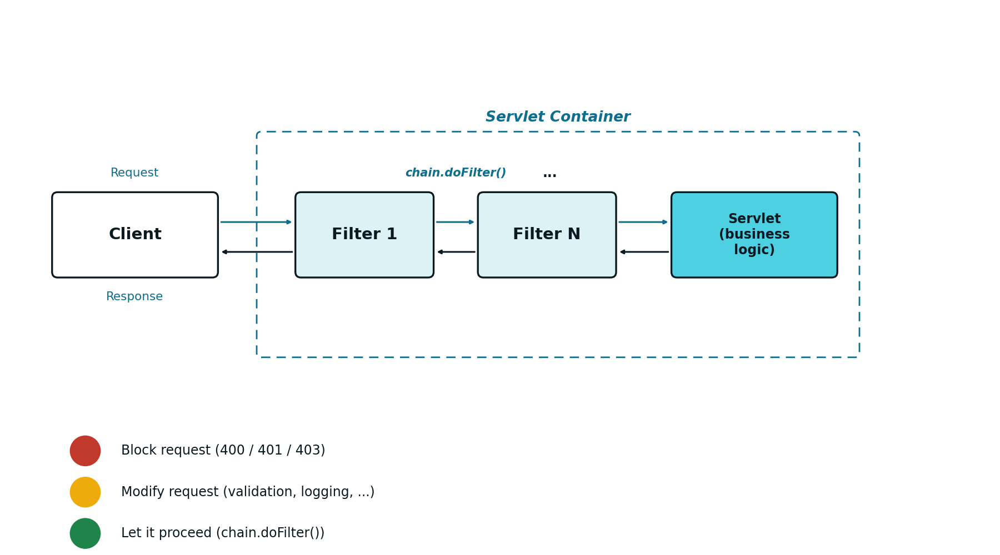
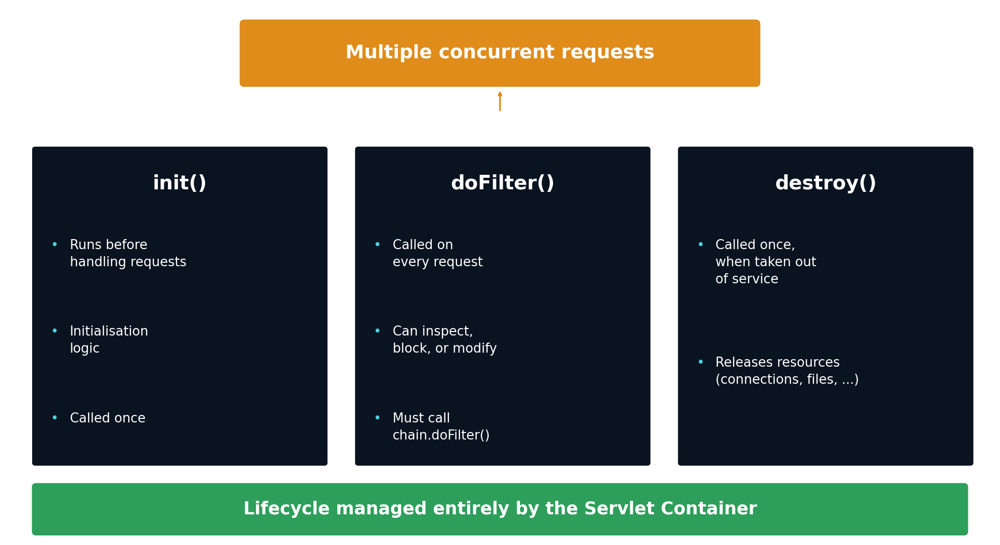
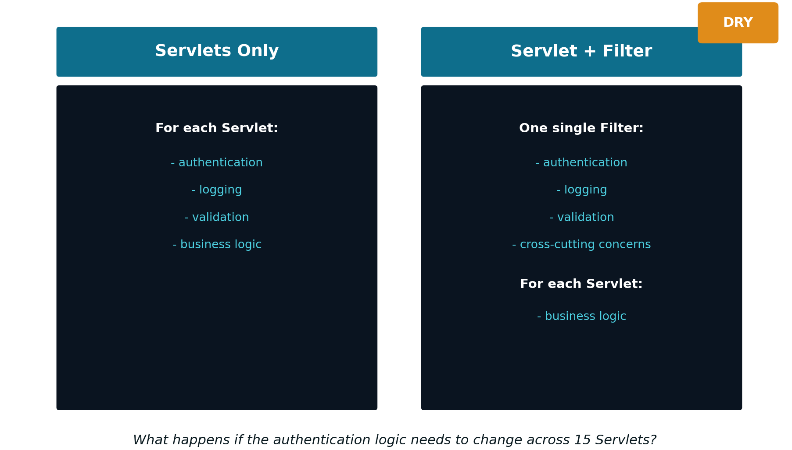

6 Security and Filters
6.1 The Problem: Security Repeated in Every Servlet
With what has been presented so far (see Chapter 5), authentication is solved: the LoginServlet validates the credentials and stores the user in the session, and each protected endpoint checks that session at the start of its doGet() or doPost(). This works, but it has a hidden cost: the authentication logic lives, duplicated, inside every protected Servlet.
This duplication brings several problems along with it:
- The same session check is repeated in every protected endpoint
- There is a real risk of inconsistency between these copies
- It is easy to forget the protection when creating a new endpoint
Put another way, this duplication violates the DRY principle (Don’t Repeat Yourself): a responsibility should live in a single place, and repeated logic increases the maintenance cost whenever that logic needs to change. More concretely, this design violates the Single Responsibility Principle: each Servlet ends up with two distinct responsibilities, its own business logic, and the security logic imposed on it. This makes security policies hard to evolve, and the design poorly scalable, both in number of endpoints and in the complexity of the access rules.
6.3 What a Filter Is
The question left unanswered is where the security logic should live: inside each Servlet? Duplicated across every endpoint? Or centralised in a single component? Security is, by nature, a cross-cutting concern: it runs through the whole application, rather than belonging to a single module. This is exactly what the Filter exists for.
A Filter is a server-side component that intercepts HTTP requests:
- It runs before the destination Servlet
- It can also run after the Servlet (over the response)
- It can block, redirect, or modify the request or the response
Beyond authentication and authorisation, Filters are the natural mechanism for other cross-cutting concerns: activity logging, CORS (Cross-Origin Resource Sharing), or input validation. A Filter separates these concerns from the business logic, which stays exclusively in the Servlet.
6.4 Where a Filter Sits in the Request
One or more Filters can be chained between the client and the Servlet that actually handles the request:
Client → Filter 1 → ... → Filter N → Servlet (business logic) → Response
Each Filter in the chain has, essentially, three possible behaviours:
- Block the request: for example,
400(invalid data),401(invalid identity) or403(authenticated but without permission) - Modify the request: data normalisation and validation, activity logging, among others
- Let it proceed: by calling
chain.doFilter(request, response), passing control to the next element in the chain
6.5 A Filter’s Lifecycle
A Filter’s lifecycle follows the same model already presented for Servlets (see Chapter 4):
init(): executed once, when the container puts the Filter into servicedoFilter(): executed on every request; it can inspect, block or modify the request and the response, and must callchain.doFilter()to continue the chaindestroy(): executed once, when the Filter is taken out of service, to free resources
Just like a Servlet, there is a single instance of each Filter, shared by multiple concurrent requests: exactly the same care already mentioned in Chapter 4 applies here — avoid shared mutable state, and prefer local variables inside doFilter().

6.6 Servlet and Filter: Separation of Responsibilities
Centralising security in a Filter reorganises the responsibilities of the whole application:

This reorganisation brings concrete advantages:
- The authentication logic is written once (DRY principle)
- The security policy is applied consistently to every endpoint
- There is no longer any risk of “forgetting” the protection on a new Servlet
- The separation between cross-cutting concerns (Filter) and business logic (Servlet) becomes clear
6.7 Declaring and Implementing a Filter
A Filter is declared with the @WebFilter annotation, indicating the URL pattern it applies to:
The pattern "/*" intercepts every request, with no exception. The class must implement jakarta.servlet.Filter, and the container discovers it automatically at deployment time. Just like Servlets, a Filter can also be declared equivalently in the web.xml file, although this practice is no longer much in use.
A typical doFilter(), protecting every request by requiring a valid session, has this form:
public void doFilter(ServletRequest request,
ServletResponse response,
FilterChain chain)
throws IOException, ServletException {
HttpServletRequest req = (HttpServletRequest) request;
HttpServletResponse res = (HttpServletResponse) response;
HttpSession session = req.getSession(false);
if (session == null || session.getAttribute("UserName") == null) {
res.sendError(HttpServletResponse.SC_UNAUTHORIZED); // 401
return;
}
chain.doFilter(request, response);
}In practice, not every request should be protected: /login itself, and static resources such as /css, /js or /images, need to remain accessible without authentication — otherwise the user could never even reach the login form.
String path = req.getRequestURI();
boolean isLogin = path.endsWith("/login");
boolean isStatic = path.startsWith(req.getContextPath() + "/css")
|| path.startsWith(req.getContextPath() + "/js")
|| path.startsWith(req.getContextPath() + "/images");
if (isLogin || isStatic) {
chain.doFilter(request, response);
return;
}6.8 Redirection vs. 401: an Architectural Difference
The correct way to react to an authentication failure depends on the kind of application:
- In a traditional, presentation-oriented Web application (see Chapter 1), the natural response is a redirect to the login page (code
302) - In a REST API, whose contract is JSON (see Chapters 7 and 8), the correct response is to return
401, with no redirection at all
The difference boils down to one sentence: in a traditional Web application, an authentication failure changes the page shown; in a REST API, it only changes the status code returned. It is the client, not the server, that decides what to do next with that 401.
6.9 Preparing for Stateless Security
The model presented in this chapter rests entirely on sessions: the server stores the authenticated user’s state (HttpSession), and the Filter checks that session on every request. This model has one limitation: it requires the server to keep memory of each user, which becomes problematic as soon as there is more than one server instance (see Chapter 8).
The alternative is token-based authentication: instead of the server storing any session at all, each request itself carries, on every call, all the information needed to authenticate. This shift, from a stateful model to a stateless model, is the subject of the following chapters.